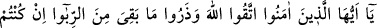
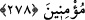
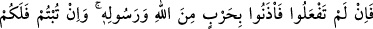
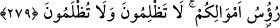

borç olur. Menfaat getiren her borç fâize bulaşmıştır.
Ebû Hanife’nin birisinde bin siyah dirhem alacağı vardı. Adam bin beyaz dirhem
vermek istedi. Ebû Hanife bunu kabûl etmedi. Bunun faiz olabileceğinden korktuğunu
söyleyip kendisine siyah dirhem verilmesini arzu buyurdu.
Rivâyete göre Ebû Hanife bir adamın kapısında beklerken görüldü. Kapıyı çalıyor
sonra güneşin altına çekiliyordu. Sebebini soranlara şöyle dedi: Benim bu adamda
alacağım var. Borçlunun herhangi bir şeyinden istifâde etmek ise caiz değildir. Bu
sebeple onun duvarının gölgesinde gölgelenmekten kaçınıyorum.
Bâyezîd Bistâmî, Hemedan’dan yâbânî safran tohumu almıştı. Bistâm’a varınca
tohumun içerisinde iki karınca bulunduğunu gördü. Tekrar Hemedan’a dönerek iki
karıncayı yerlerine bıraktı. İşte verâ ve takvâ böyle olur. Bu zamanda böyle kişiler çok
az bulunur. Sûfî bile olsalar insanların çoğu harâma, helâle ve şüpheli şeylere pek
dikkat etmemektedirler. Bu sebeple dîne uymanın ihmâl edildiğini ve dinin garip
kaldığını görüyoruz. Allah bizi ve sizi doğru yola eriştirsin. Tevfik O’na aiddir.
Celâleddin Rûmî der ki:
Yazıklar olsun bilmeden, vâkıf olmadan yaptığın konuşmalara,
Sana sarık ve cübbe ile sûf libâsın hiçbir faydası olmaz.
278. Ey iman edenler! Allah’tan korkun. Eğer gerçekten inanıyorsanız mevcut
fâiz alacaklarınızı terkedin.
Kalan fâizi almamak sûretiyle nefislerinizi Allah’ın azâbından koruyun. Çünkü îmân
kat’î sûrette emre itâat etmeyi gerektirir.
279. Şayet (fâiz hakkında söylenenleri) yapmazsanız, Allah ve Rasûlü tarafından
(fâizcilere karşı) açılan savaştan haberiniz olsun. Eğer tevbe edip vazgeçerseniz,
sermayeniz sizindir; ne haksızlık etmiş ne de haksızlığa uğramış olursunuz.
İster fâizin haramlığını inkâr edin, ister etmeyin, eğer Allah’tan korkup geri kalan fâizi